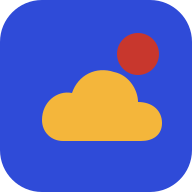

Mình đang mất kết nối
Hãy mở lại phần khóa học đã lưu trên máy. Các video và bài đọc bên ngoài sẽ dùng được khi có mạng.
Mở khóa họcLần đầu mở ứng dụng cần kết nối mạng để lưu nội dung.

Hãy mở lại phần khóa học đã lưu trên máy. Các video và bài đọc bên ngoài sẽ dùng được khi có mạng.
Mở khóa họcLần đầu mở ứng dụng cần kết nối mạng để lưu nội dung.